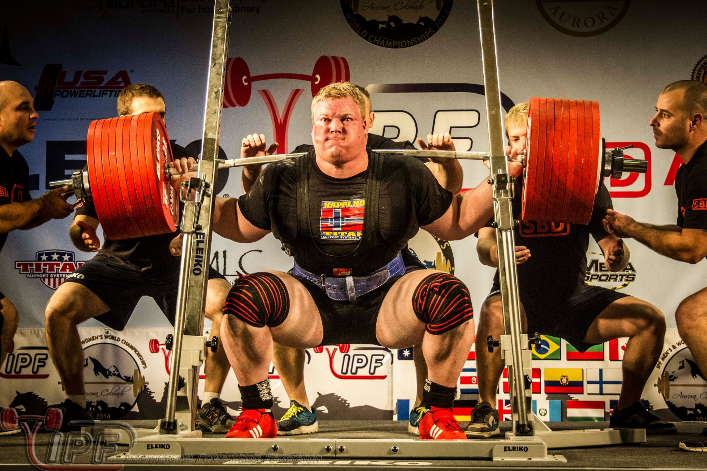

fekvenyomás
Guggolás Technikája
- A lábak párhuzamosak legyenek, és a térdek ne menjenek túl a lábujjakon.
- A hát egyenes maradjon, hogy elkerüljük a gerinc túlzott terhelését.
- A fenék a legmélyebb pontig leüljön, de a térdek ne menjenek túl a testvonalon.

Fekvenyomás Technikája
- A lábaknak szilárdan a padlón kell lenniük, hogy biztos alapot adjanak.
- A vállaknak nem szabad elhagyniuk a padot, és a rúd nem érintheti a nyak részt.
Felhúzás Technikája
- A háttal és a csípővel kell kezdeni a mozdulatot, hogy elkerüljük a túlzott terhelést a gerincen.
- A mozdulatot az alsó hátsó résznél kell indítani, hogy a test súlya megfelelően legyen elosztva.